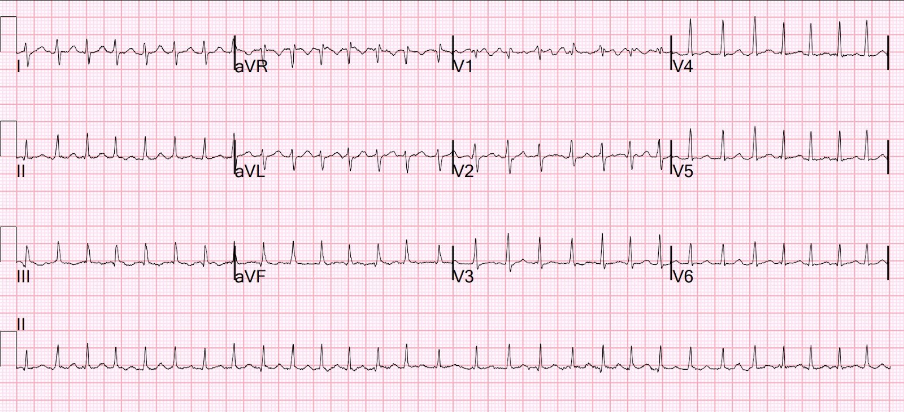
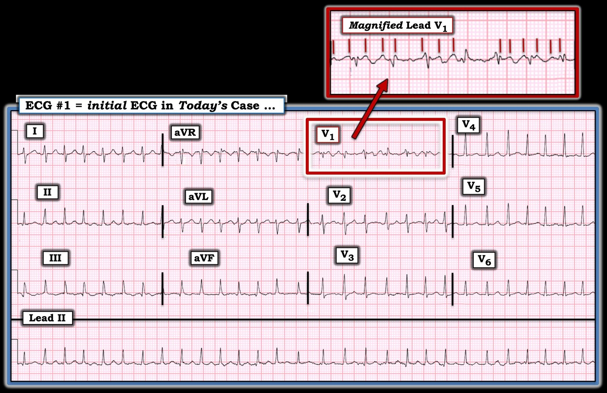

09/10/2025 — Mang thai 34 tuần. Tần số tim 180
Bản dịch tiếng Việt của bài "34 weeks pregnant. Heart rate of 180" – Dr. Smith’s ECG Blog. Giữ nguyên toàn bộ 2 hình ảnh của bản gốc.
Một phụ nữ 41 tuổi, đã sinh nhiều lần, có tiền sử một đợt rung nhĩ đáp ứng thất nhanh (Atrial Fibrillation with Rapid Ventricular Response, AF RVR) trong bối cảnh mang thai 15 năm trước và mới bị thai chết lưu gần đây, nhập viện vì AF RVR tái phát trong bối cảnh thai 34 tuần dựa trên siêu âm tại giường.
Bệnh nhân bắt đầu thấy khó thở, tim đập nhanh và chóng mặt từ tối hôm trước (khoảng 12 giờ trước đó). Vì triệu chứng kéo dài, bệnh nhân đến một bệnh viện nhỏ hơn, tại đó điện tâm đồ cho thấy có thể là AF RVR với tần số lên tới 180 lần/phút, sau đó giảm xuống khoảng 140 lần/phút sau khi dùng metoprolol.
D-dimer của bệnh nhân cũng tăng, gần 2000, nên bệnh nhân được chuyển tới một trung tâm tuyến cuối để xử trí AF RVR trong bối cảnh thai kỳ nguy cơ cao.
Khi đến nơi, bệnh nhân không có than phiền gì mới, cho biết vẫn cảm nhận được thai máy, không thấy cơn co tử cung và không bị rỉ ối. Bệnh nhân đã không đi khám thai vì lo âu xoay quanh lần mang thai trước kết thúc bằng thai chết lưu.
HA 135/107 | Mạch (!) 181 | Nhịp thở (!) 29 | SpO2 (!) 92%
Đây là điện tâm đồ của bệnh nhân tại khoa cấp cứu (ED):


Bạn nghĩ gì?
QRS hẹp, nhanh (174), không có sóng P, không đều hoàn toàn = rung nhĩ đáp ứng thất nhanh (RVR). Không thể có chẩn đoán nhịp nào khác! Không có bằng chứng thiếu máu cục bộ.
Thuật toán thông thường chẩn đoán AF đáp ứng thất nhanh trên cả 3 điện tâm đồ đã ghi.
Nhân tiện, mô hình AI đọc điện tâm đồ PMCardio cũng có đầy đủ chức năng chẩn đoán điện tâm đồ, bao gồm cả nhịp, và có độ chính xác cực cao đối với rung nhĩ. Ứng dụng chẩn đoán rung nhĩ đáp ứng thất nhanh.
Diagnostic Accuracy of the PMCardio Smartphone Application for Artificial Intelligence-based interpretation of electrocardiograms in primary caare (AMSTELHEART-1) (Độ chính xác chẩn đoán của ứng dụng điện thoại thông minh PMCardio trong đọc điện tâm đồ dựa trên trí tuệ nhân tạo ở tuyến chăm sóc ban đầu)
Validation of an automated artificial intelligence system for 12‑lead ECG interpretation (Thẩm định một hệ thống trí tuệ nhân tạo tự động đọc điện tâm đồ 12 chuyển đạo)
Bác sĩ sản khoa có mặt. Siêu âm tại giường cho thấy phân suất tống máu tốt, có thể giãn thất phải, không có đường B.
Khám thai nhi thấy có cử động và nhịp tim thai 160.
Đã cho adenosine (Đây là một sai lầm. Đây rõ ràng không phải là nhịp nhanh QRS hẹp đều và gần như không có cơ hội nào chuyển nhịp bằng adenosine).
Bệnh nhân bị tụt huyết áp và được đặt đường động mạch.
Đã cho magnesi và dịch truyền. Đã cho metoprolol (không rõ liều) và tần số tim giảm xuống 140.
Chụp CT không thấy thuyên tắc phổi (PE).
Adenosine 12 mg được nhắc lại.
Các bác sĩ đã bàn về các thuốc kiểm soát nhịp khác, nhưng amiodarone và digoxin có độc tính cao đối với thai nhi, và bệnh nhân ở ngưỡng tụt huyết áp, nên họ rất ngần ngại cho diltiazem.
Đã thử esmolol, huyết áp tâm thu tụt xuống khoảng 40 mmHg.
Vì lúc này bệnh nhân không ổn định, họ đã tiến hành sốc điện chuyển nhịp đồng bộ 200J, an thần bằng etomidate, và chuyển về nhịp xoang bình thường (NSR).
Điểm cần học:
1. Nhịp không đều hoàn toàn này là rung nhĩ, KHÔNG phải PSVT. Điện tâm đồ này không thể là gì khác ngoài rung nhĩ!!
1a. Trong những trường hợp rất hiếm, nhịp QRS hẹp không đều hoàn toàn có thể là MAT, nhưng đó không bao giờ nên là ý nghĩ đầu tiên của bạn vì nó tương đối hiếm hơn rất nhiều.
2. Adenosine không chuyển nhịp được rung nhĩ!
3. Sốc điện chuyển nhịp an toàn trong thai kỳ (xem bài UpToDate bên dưới). Bước đầu tiên trong ca này lẽ ra phải là sốc điện chuyển nhịp!!
4. Xét về nguy cơ đột quỵ, ở bệnh nhân chưa dùng thuốc chống đông, sốc điện chuyển nhịp AF RVR là RẤT an toàn nếu thời gian từ lúc khởi phát < 12 giờ (tỷ lệ đột quỵ cực thấp — khoảng 0.2%)
5. Thậm chí sốc điện chuyển nhịp vẫn an toàn nếu thời gian từ lúc khởi phát là 12-48 giờ (tỷ lệ đột quỵ thấp hơn nhiều so với 1%).
Sốc điện chuyển nhịp dòng một chiều (DCCV) an toàn trong thai kỳ
Direct current cardioversion in pregnancy: a multicentre study (Sốc điện chuyển nhịp dòng một chiều trong thai kỳ: một nghiên cứu đa trung tâm)
Trích từ UpToDate:
Sốc điện chuyển nhịp
Sốc điện chuyển nhịp cấp cứu hoặc chương trình có thể được thực hiện ở mọi giai đoạn của thai kỳ [13,50,76], và nên được dùng cho mọi rối loạn nhịp kéo dài có tổn hại huyết động, đồng thời có thể cân nhắc cho các rối loạn nhịp kháng thuốc. Trong ba tháng cuối thai kỳ, một số bác sĩ ưa thực hiện sốc điện chuyển nhịp dưới gây mê toàn thân và đặt nội khí quản, do đường thở khó hơn và nguy cơ hít sặc dịch dạ dày tăng trong thai kỳ. Sốc điện chuyển nhịp không làm tổn hại dòng máu tới thai nhi [76]. Mặc dù về lý thuyết có nguy cơ gây rối loạn nhịp ở thai nhi, nguy cơ này rất nhỏ do ngưỡng rung cao và lượng năng lượng tới thai nhi rất ít. Tuy vậy, vẫn khuyến cáo theo dõi điện tử liên tục nhịp tim thai sau thủ thuật, vì đã có báo cáo các trường hợp phải mổ lấy thai cấp cứu do rối loạn nhịp ở thai nhi [77].
Trong một nghiên cứu đa trung tâm, 27 phụ nữ mang thai đã được sốc điện chuyển nhịp 29 lần vì các rối loạn nhịp trên thất (rung nhĩ [44 phần trăm], cuồng nhĩ [30 phần trăm], SVT [19 phần trăm], nhịp nhanh nhĩ [7 phần trăm]) [78]. Không có trường hợp tử vong nào ở mẹ hoặc thai nhi. Tuổi thai trung vị lúc sốc điện là 28 tuần, và tuổi thai trung vị lúc sinh là 35 tuần. Theo dõi thai nhi sau thủ thuật được tiến hành sau sốc điện ở gần một nửa số bệnh nhân, và ở 7 phần trăm, phải cho sinh khẩn cấp sau sốc điện do nhịp chậm ở thai nhi.
= = =
======================================
BÌNH LUẬN CỦA TÔI, bởi KEN GRAUER, MD (9/10/2025):
Hai khía cạnh của ca hôm nay đáng được chú ý đặc biệt: i) Chẩn đoán nhịp; và ii) Những cân nhắc điều trị cho chẩn đoán nhịp đó, khi bệnh nhân này đang mang thai.
= = =
Chẩn đoán nhịp:
Cho rõ ràng, trong Hình 1 — tôi đã đăng lại điện tâm đồ ban đầu của bệnh nhân. Đã có sự không chắc chắn về nhịp khi bệnh nhân được khám lần đầu.
- Việc nhịp này là nhịp nhanh trên thất thì hiển nhiên, dựa vào QRS hẹp ở cả 12 chuyển đạo — và tần số nhanh.
- Điểm MẤU CHỐT: Mặc dù thoạt nhìn, nhịp trong Hình 1 có vẻ đều — nhưng nó không đều. Việc nhịp này thực ra không đều hoàn toàn (với sự thay đổi khoảng R-R nhỏ nhưng có thật trong suốt toàn bộ dải nhịp DII dài) — có thể được xác minh trong vòng vài giây bằng compa đo (calipers) (Xin nhấn mạnh — Khi đã luyện tập, có thể nhận ra ngay tính không đều hoàn toàn của nhịp này mà không cần compa đo, như tôi đã làm được).
- Không có sóng P ở bất kỳ chuyển đạo nào trong 12 chuyển đạo.
- Do đó: Việc thấy một nhịp không đều hoàn toàn với QRS hẹp và không có sóng P — xác định nhịp này là AFib (rung nhĩ), ở đây kèm đáp ứng thất nhanh .
- LƯU Ý #1: AFib đáp ứng thất nhanh thường “trông” đều — điều này có thể dẫn đến chẩn đoán nhầm là một nhịp SVT do vào lại (như AVNRT hoặc AVRT xuôi chiều). Mặc dù đa số bệnh nhân dung nạp được Adenosine tĩnh mạch — thuốc này không phải là không có khả năng gây tác dụng phụ. Vì Adenosine không hiệu quả đối với AFib — nhận ra nhịp của ca hôm nay lẽ ra đã có thể tránh được việc thử Adenosine.
- LƯU Ý #2: Xem xét ô phóng to của chuyển đạo V1 (ở góc trên bên phải của Hình 1) — gợi ý có hoạt động nhĩ ở chuyển đạo này. Nhưng các vạch ĐỎ thẳng đứng mà tôi đánh dấu không phải là sóng cuồng nhĩ. Thường có sự “tổ chức hóa” thoáng qua của các sóng lăn tăn rung nhĩ — và khi điều này xảy ra, bạn có thể thấy những dao động nhĩ gần như đều ở chuyển đạo V1 (là chuyển đạo gần nhất để ghi hoạt động nhĩ). Nhưng AFlutter (cuồng nhĩ) có đặc điểm là hoạt động nhĩ đều, mà ở bệnh nhân không dùng thuốc chống loạn nhịp — thường biểu hiện tần số nhĩ trong khoảng ~250-350 lần/phút.Do đó — tính không đều của hoạt động nhĩ trong Hình 1, có lúc vượt xa 300 lần/phút, loại trừ cuồng nhĩ khỏi chẩn đoán nhịp.
= = =
Hình 1: Tôi đã ghi nhãn điện tâm đồ ban đầu trong ca hôm nay.


= = =
Những cân nhắc điều trị AFib ở bệnh nhân mang thai:
Phần tổng quan của tôi về điều trị AFib trong thai kỳ dựa trên các công bố sau: Tamirisa và cs. (J Am Coll Cardiol EP 1:120-135, 2022) — Cacciotti và Passaseo ( J Atr Fib 3(3):295, 2010) — và — Youssef ( Eur Soc Card 15(17), 2019):
- Nhìn chung — AFib không phải là biến chứng thường gặp của thai kỳ bình thường. Dù vậy, tôi thấy khó ước tính tỷ lệ hiện mắc của rối loạn nhịp này — vì các ước tính tần suất sẽ phụ thuộc vào nhiều yếu tố, bao gồm tuổi và tình trạng sức khỏe của bệnh nhân, và sự hiện diện của các yếu tố thúc đẩy.
- Có thêm những yếu tố phức tạp trong ca hôm nay. Bao gồm tuổi của bệnh nhân (41 tuổi) và tình trạng đã sinh nhiều lần (G8P6) — cùng với việc không khám thai (do bệnh nhân lo âu sau lần mang thai trước kết thúc bằng thai chết lưu). Tuổi thai ước tính của lần mang thai hiện tại = 34 tuần. Đáng chú ý — bệnh nhân này từng có một đợt AFib vào năm 2009 trong một lần mang thai trước đó!
= = =
Về điều trị:
- Ưu tiên hàng đầu (như với mọi bệnh nhân AFib nhanh mới xuất hiện) — là bảo đảm ổn định huyết động. Nếu/khi cần — sốc điện chuyển nhịp có vẻ an toàn ở mọi giai đoạn của thai kỳ. (Trong và sau sốc điện chuyển nhịp — khuyên theo dõi thai nhi, do nguy cơ rối loạn nhịp ở thai nhi).
- Tìm các yếu tố thúc đẩy tiềm tàng — điều này rất quan trọng, vì nếu có một nguyên nhân nền gây AFib — điều đó sẽ ảnh hưởng lớn đến quyết định điều trị (Loại trừ cường giáp, sử dụng rượu, cocaine hoặc ma túy khác, thuốc giống giao cảm hoặc thuốc kích thích khác, rối loạn điện giải — bệnh tim bẩm sinh ở người lớn — bệnh tim do thấp — bệnh cơ tim chu sinh — hoặc dạng bệnh tim nền khác) ==> Siêu âm tim, TSH, công thức máu, điện giải, v.v. — tất cả là một phần của đánh giá ngay lập tức.
- Thuốc kiểm soát tần số — Thuốc chẹn beta được khuyến cáo là lựa chọn hàng 1 để kiểm soát tần số AFib. Digoxin từ lâu đã được biết là an toàn trong thai kỳ (với điều kiện không có tiền kích thích). Verapamil là thuốc hàng 2 (và được ưa dùng hơn Diltiazem). Và, nếu đạt được kiểm soát tần số kèm ổn định huyết động — có thể hợp lý khi hoãn quyết định sốc điện chuyển nhịp, vì một tỷ lệ cao bệnh nhân tự chuyển về nhịp xoang trong vòng 24 giờ đầu nhập viện.
- Amiodarone — không nên dùng trong thai kỳ (tác dụng bất lợi đáng kể).
| LƯU Ý: Tôi giới thiệu tài liệu tham khảo nêu trên của Tamirisa và cs. — vì đây là một bài tổng quan cập nhật (State of the Art Review) năm 2022 của JACC về rối loạn nhịp trong thai kỳ. Bài viết này có các bảng tra cứu chi tiết về thuốc và phương pháp điều trị cụ thể cho các rối loạn nhịp khác nhau trong thai kỳ. |
= = =
= = =
= = =